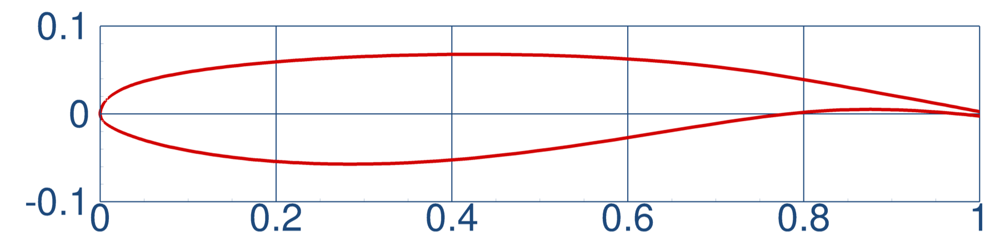
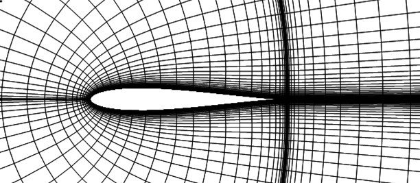
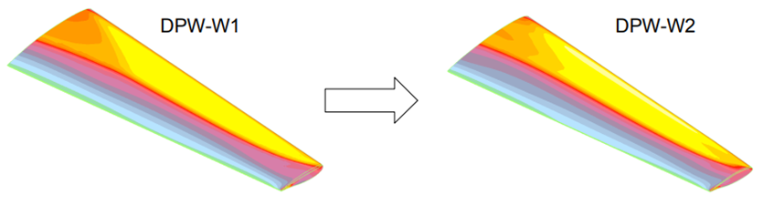
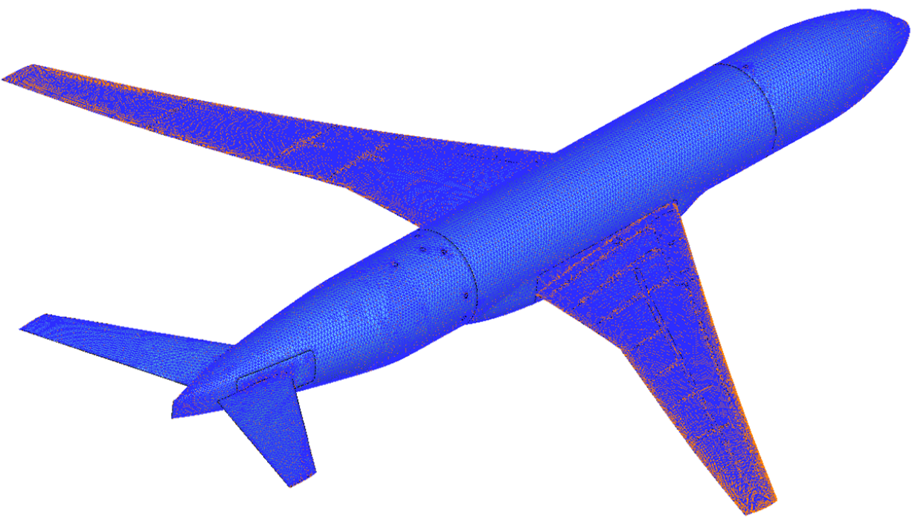
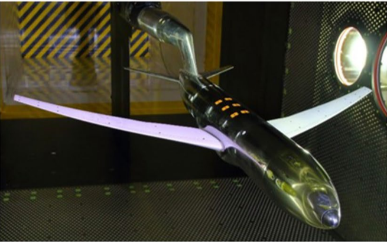
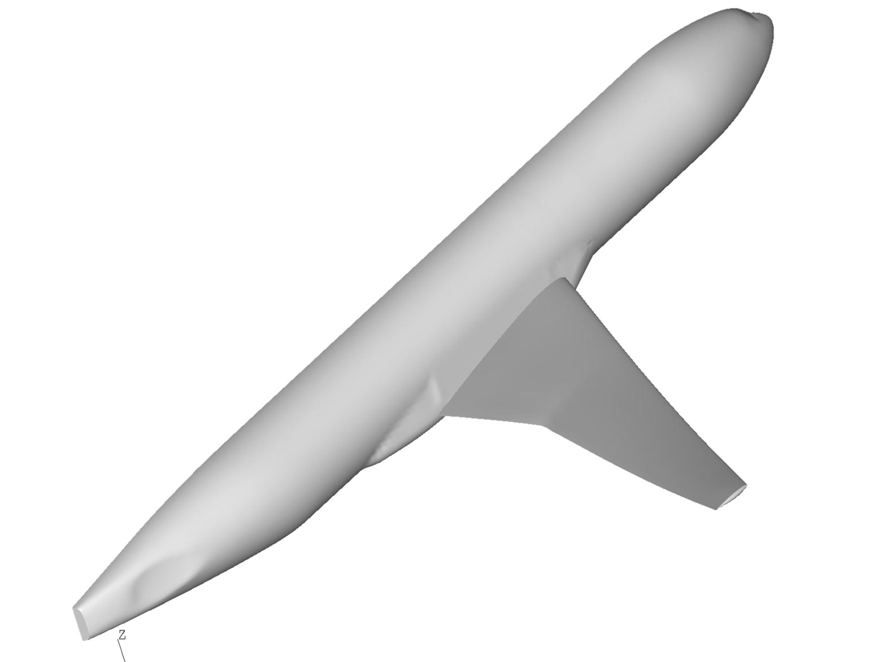
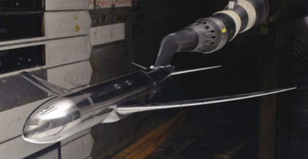
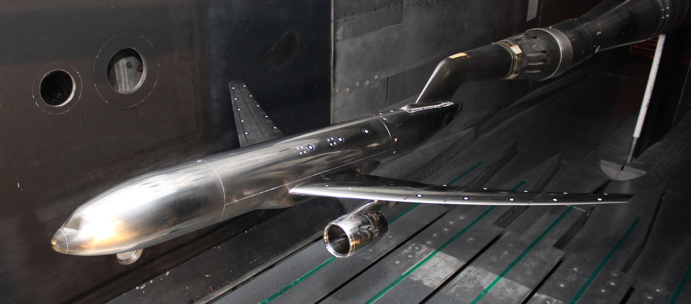

| Scatter | Wind Tunnel Env | Static Deformation | Buffet |
| S | W | D | B |
| • | S | W | D | B | ONERA OAT15a |
| • | B | ONERA OAT15a (unsteady/extended AoA) | |||
| • | S | ONERA OAT15A (the sequel) |
| • | S | Joukowski Airfoil |
| • | S | Grid Convergence (α = 0.50°) | |||
| • | S | Polar (α=[-1°,0°,0.5°,1°,1.5°,2°,2.5°,3°]) |
| • | D | FEM Validation |
| • | B | Rigid Buffet (unsteady calculation) | |||
| • | B | Elastic Buffet (unsteady FSI calculation) |
| • | S | W | Grid Convergence (α = 2.50°) | ||
| • | D | Grid Convergence (CL = 0.50) | |||
| • | S | W | D | Polar (Rigid pre-deformed geometry) | |
| • | D | Polar (Elastic FSI) | |||
| • | W | Polar (WB + Strut) (tare & interference) | |||
| • | W | Polar (WB + Tunnel) (wall interference) | |||
| • | W | Polar (WB + Strut + Tunnel) (test environment) |
| • | W | Polar (WBT) (freeair) | |||
| • | W | Polar (WBT + Strut) (tare & interference) | |||
| • | W | Polar (WBT + Tunnel) (wall interference) | |||
| • | W | Polar (WBT + Strut + Tunnel) (test environment) |
| • | D | Polar (Rigid pre-deformed geometry) | |||
| • | D | Polar (Elastic FSI) |

| Working Group | Test Case |
|---|---|
| Sources of Scatter | 1a & 1c |
| Wind Tunnel Environment | 1a |
| Static Deformation (AePW) | 1a |
| Buffet (AePW) | 1a & 1b |

| Working Group | Test Case |
|---|---|
| Sources of Scatter | 1b |

| Working Group | Test Case |
|---|---|
| Sources of Scatter | 1d & 1e |

| Working Group | Test Case |
|---|---|
| Static Deformation (AePW) | 1b |

| Working Group | Test Case |
|---|---|
| Buffet (AePW) | 2 & 3 |
| Full Scale (inches) | Model Scale (meters) | Tunnel Coordinates (meters) | |
| SREF (semispan) | 297360.00 sq.in | 0.179014 sq.m | 0.179014 sq.m |
| CREF | 275.80 in | 0.15131 m | 0.15131 m |
| Semispan | 1156.75 in | 1.26927 m | 1.26927 m |
| Moment Center | (1325.9,0.0,177.95) | (0.72741,0.0,0.097627) m |

| Working Group | Test Case |
|---|---|
| Sources of Scatter | 2a & 2b |
| Wind Tunnel Environment | 2a & 2b & 2b(S) |
| Static Deformation (AePW) | 2a(E) & 2b(E) |
| Condition | Geometry |
| α = -1.50° | Jig "as-built" CRM geometry |
| CL = 0.50 | 2.50-deg LoQ AE CRM geometry |
| α = 2.50° | 2.50-deg LoQ AE CRM geometry |
| α = 2.75° | 2.75-deg LoQ AE CRM geometry |
| ... etc ... | |
| α = 4.00° | 4.00-deg LoQ AE CRM geometry |
| α = 4.25° | 4.25-deg LoQ AE CRM geometry |
| Full Scale (inches) | Model Scale | Tunnel Coordinates | |
| SREF (semispan) | 297360.00 sq.in | 216.77544 sq.in | 216.77544 sq.in |
| CREF | 275.80 in | 7.51950 in | 7.51950 in |
| Semispan | 1156.75 in | 31.23225 in | 31.23225 in |
| Moment Center | (1325.9,0.0,177.95) | (35.7993,0.0,4.80465) | (156.0,0.0,0.0) |

| Working Group | Test Case |
|---|---|
| Wind Tunnel Environment | 3b & 3b(S) |
| Full Scale (inches) | Model Scale | Tunnel Coordinates | |
| SREF (semispan) | 297360.00 sq.in | 216.77544 sq.in | 216.77544 sq.in |
| CREF | 275.80 in | 7.51950 in | 7.51950 in |
| Semispan | 1156.75 in | 31.23225 in | 31.23225 in |
| Moment Center | (1325.9,0.0,177.95) | (35.7993,0.0,4.80465) | (156.0,0.0,0.0) |

| Working Group | Test Case |
|---|---|
| Static Deformation (AePW) | 3a (E) & 3b (E) |
| Full Scale (inches) | Model Scale | Tunnel Coordinates | |
| SREF (semispan) | 297360.00 sq.in | 216.77544 sq.in | 216.77544 sq.in |
| CREF | 275.80 in | 7.51950 in | 7.51950 in |
| Semispan | 1156.75 in | 31.23225 in | 31.23225 in |
| Moment Center | (1325.9,0.0,177.95) | (35.7993,0.0,4.80465) | (156.0,0.0,0.0) |